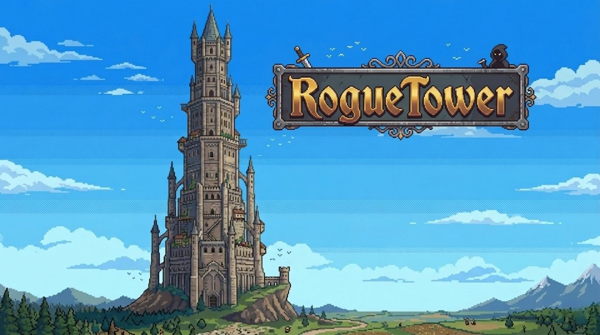
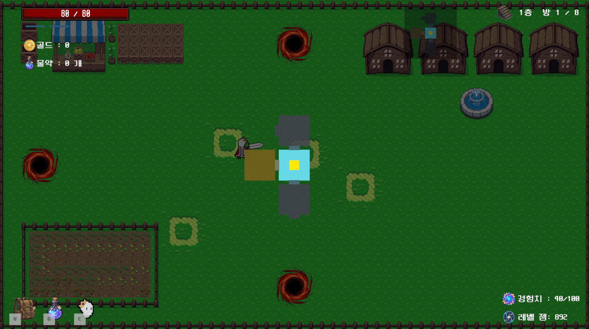
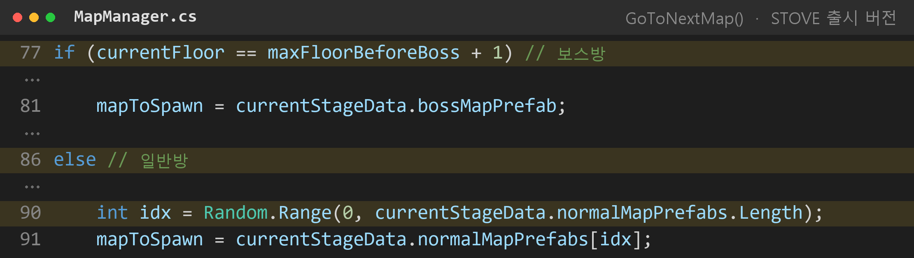
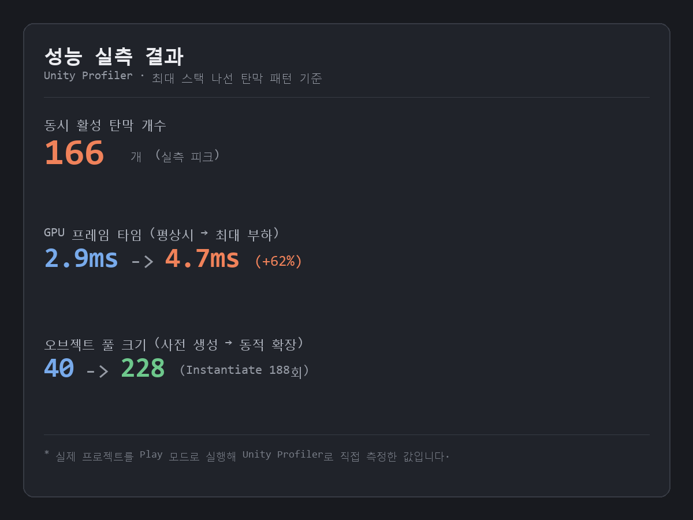
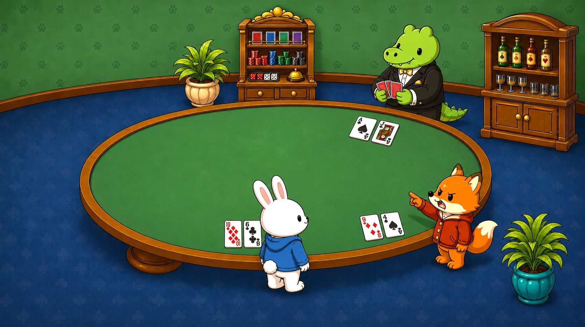

Scene
Console
안녕하세요, Unity 클라이언트 프로그래머
로그라이크 로그타워와 멀티플레이 카드 게임 ZooJack을 팀으로 개발해 STOVE와 itch.io에 출시했습니다. 콘텐츠가 계속 쌓이는 게임을 데이터 분리 구조와 최적화로 안정적으로 확장하는 일에 관심이 있습니다.

출시까지 완성한 두 프로젝트에서 직접 구현하고 검증한 역량입니다.
취업 목표
출시해 본 경험에서 출발해, 라이브 서비스 게임의 클라이언트 개발자로 가는 단계별 계획
게임 플레이 이력
공부 계획 세우기
절차적으로 생성되는 던전에서 스킬과 장비를 조합해 보스까지 살아남는 로그라이크 액션


Unity Profiler로 직접 측정 · 최대 스택 나선 탄막 패턴 기준
ScriptableObject로 스킬을 데이터로 분리해, 코드 수정 없이 스킬 추가와 밸런스 조정이 가능합니다


층마다 미리 만든 맵 중 하나를 무작위로 불러오고, 몬스터를 모두 처치하면 다음 층 문이 열립니다


처음에는 20개 층을 하나씩 손으로 만들 계획이었지만, 일정과 아이디어가 부족해진다는 기획자의 제안을 받아 미리 만든 맵을 무작위로 불러오는 방식으로 바꿨습니다.
함께 일하는 기획자와, 무거운 전투 구간을 위해 만든 구조


몬스터 능력치를 코드에 하드코딩하지 않고 JSON으로 분리했습니다. 기획자가 코드 수정 없이 밸런스를 조절할 수 있는 구조입니다.
보스 탄막처럼 부하가 큰 구간에서 생성·파괴 비용을 줄여 프레임 저하를 막았습니다.
Unity Profiler로 직접 측정 · 최대 스택 나선 탄막 패턴 기준

출시로 끝내지 않고, 커뮤니티에 남은 피드백을 받아 게임을 다듬었습니다

만드는 사람은 놓치지만, 플레이하는 사람은 바로 느끼는 지점이 있다는 것을 배웠습니다.
딜러의 속임수를 고발해 승패를 뒤집는 3인 심리전 카드 게임




딜러의 속임수를 눈치채고 고발해 승패를 뒤집는 심리전 장치

한 사람의 행동이 다른 사람 화면에도 똑같이 반영되도록 게임 상태를 맞췄습니다
Contact
감사합니다! 잘 부탁드립니다!
attackScript(인벤토리 공격력)에 저장하고 있었음.playerScript 변수에 '인벤토리 공격력 + 플레이어 공격력' 최종값을 전달하도록 수정.

BEFORE
GameDirector 게임 진행 + 화면 표시가 한 클래스에
AFTER · 화면 표시 코드를 역할별로 분리
GamePanelPresenter 핫시트·네트워크 공통 화면 조작
BetChipsView 판돈 칩·금액 표시
MoneyBarView 플레이어별 머니바
ResultMarkerView 승패 표식 (왕관·비석)
게임 진행은 GameDirector에 남기고, 화면 표시만 4개 클래스로 분리